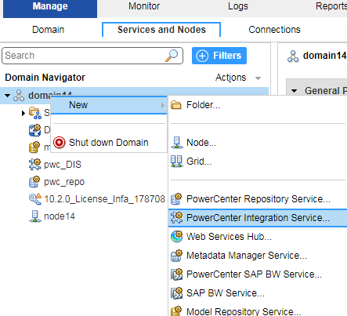
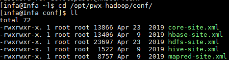
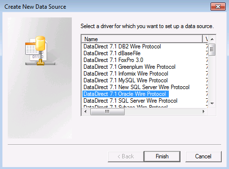
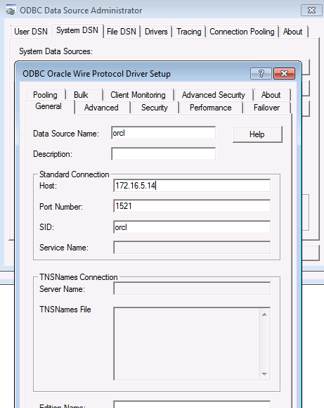
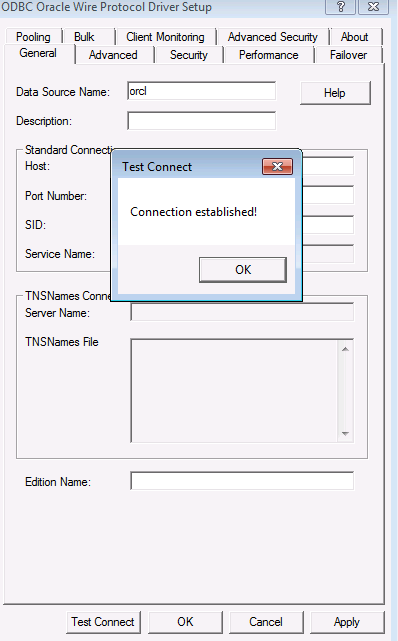
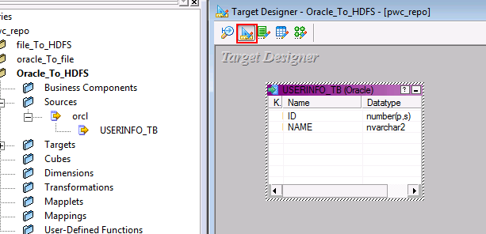
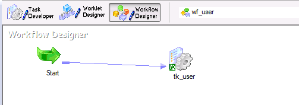
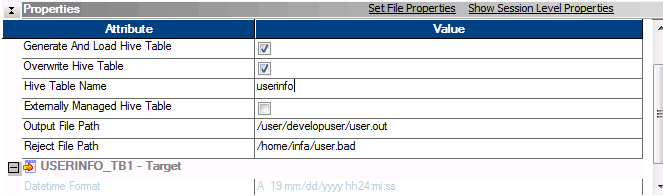

Connection Instruction Between Informatica PowerCenter and FusionInsight HD¶
Succeeded Case¶
Informatica PowerCenter 10.2.0 ↔ FusionInsight HD 6.5 (HDFS/Hive)
Environment Information¶
- Informatica Server 10.2.0 Linux
- Informatica PowerCenter Client 10.2.0
- Oracle database 11g
- FusionInsight HD client
Architecture¶
- One Linux machine, installed with Informatica Server and FusionInsight HD client
- One Windows machine, installed with Informatica PowerCenter Client
Install and config FusionInsight HD client¶
-
Install the FusionInsight client，installation path is
/opt/hadoopclient -
Create a user from FusionInsight HD manager，refer to
. For example, create a user named developuser，and assign him all rights for HDFS and Hive. Download the keytab file, put krb5.conf file to the /opt/path of client node.
Install Oracle database and Informatica Server¶
- create user oracle，install oracle database
- create user infa,login to oracle use
sqlplus / as sysdba, run the following sqlcreate tablespace rep_data datafile '/u01/app/oracle/oradata/orcl/rep_data_01.dbf' size 512m ; create user pwc_user identified by pwc_user default tablespace rep_data temporary tablespace temp; create user mdl_user identified by mdl_user default tablespace rep_data temporary tablespace temp; create user domain_user identified by domain_user default tablespace rep_data temporary tablespace temp; grant dba to domain_user,pwc_user,mdl_user; - Get Informatica Server installation package and upload to server node, run
./install.shas user infa, the installation path is/home/infa/Informatica/10.2.0. - Visit ip:6008 in a browser, open the Administrator tool, input the user name and password.
Informatica Server configuration¶
-
Create PowerCenter Repository Service
- In Services and Nodes, right click domain, Create a PowerCenter Repository Service
 - Set Name and node, next
- Set Name and node, next - Set database information, finish
- Set database information, finish
- Enable the Repository Service,and create contents

- In repository Properties, set the Operating Mode to Mormal, and recycle the service

-
Create PowerCenter Integration Service
- In Services and Nodes, right click domain, Create a PowerCenter Integration Service
 - Set Name and node, next
 - Set Repository information, finish，enable the service
- Set Repository information, finish，enable the service
-
Create developuser in infa server
- InSecurity tab, create a user, named as developuser，the same as user in Hadoop cluster

- Edit the user privileges and groups


-
Infa Server configuration for Hadoop
- Copy
krb5.conffile in/optto/etcand${INFA_HOME}java/jre/lib/security/, and give the read right to user infa. - Login to node as user infa, create a directory for the configuration file, such as
/opt/pwx-hadoop/conf - Get the follwoing configuration fie from FusionInsight HD client, put them into
/opt/pwx-hadoop/confand change the file right to 775
 - Do Kerberos authentication, and set cache,the infa user should have read and write rights for the cache file
- Edit thesource /opt/hadoopclient/bigdata_env kinit -c /home/infa/krb5cc_developuser developusercore-site.xmlfile in/opt/pwx-hadoop/confadd the following property- In Administrator tool, add an Environment variable for<property> <name>hadoop.security.kerberos.ticket.cache.path</name> <value>home/infa/krb5cc_developuser</value> <description>Path to the Kerberos ticket cache. </description> </property>pwc_DIS, recycle the service
- delete jar files related to hive in
/home/infa/Informatica/10.2.0/services/shared/hadoop/hortonworks_2.5/lib/and copy jar files related to hive in/opt/hadoopclient/Hive/Beeline/libto the path, change the file rights
rm -f /home/infa/Informatica/10.2.0/services/shared/hadoop/hortonworks_2.5/lib/hive* cp /home/infa/Informatica/10.2.0/services/shared/hadoop/hortonworks_2.5/lib/hive* /home/infa/Informatica/10.2.0/services/shared/hadoop/hortonworks_2.5/lib chown infa:oinstall /home/infa/Informatica/10.2.0/services/shared/hadoop/hortonworks_2.5/lib/hive* - Copy
PowerCenter Client configuration¶
PowerCenter Repository Manager configuration¶
-
Get PowerCenter Client installation package,install PowerCenter Client,start PowerCenter Repository Manager, in tool bar, choose
Repository->Configure domain,input the domain information, then we can see the repository created before.

-
Double click the repository, input user name and password, connect

-
In folder, create a folder


PowerCenter Designer configuration¶
-
Open PowerCenter Designer, right click the folder, click open
 - Click tool bar, Sources->import from databases，create a system DSN in ODBC source,choose Oracle Driver,input database information.
- Click tool bar, Sources->import from databases，create a system DSN in ODBC source,choose Oracle Driver,input database information.


 - Choose the data source created just now, input database user name and password, connect, get the table in the database
 - Choose target designer，drag in the table in sources
- Choose target designer，drag in the table in sources - Double click the table, set database type to Flat File

- In mapping configuration, create a new mapping, drag in the source and target table and link them

PowerCenter Workflow Manager¶
-
In tool bar Task, create a new task,name it and choose the mapping created just now


-
Create a workflow, drag in the task, link them


-
In tool bar connection, create a application connection, choose Hadoop HDFS Connection

HDFS Connection URI：hdfs://namenodeip:25000 Hive URL : jdbc:hive2://172.16.4.21:21066/default;sasl.qop=auth-conf;auth=KERBEROS;principal=hive/hadoop.hadoop.com@HADOOP.COM;user.keytab=/opt/user.keytab;user.principal=developuser Hive User Name: developuser
-
Double click the task created, in mapping tab, click
Targets, set the Writers toHDFS Flat Write, set connection value to the connection created just now
-
In properties, config as following

-
Save the workflow, right click, start the workflow

-
Open PowerCenter Workflow Monitor, the run information is shown.

-
In HDFS, check if the data is uploaded.

-
In the task properties, choose
Generate And Load Hive Table,Overwrite Hive Table,input the table created in hive, start workflow
-
Open PowerCenter Workflow Monitor, the run information is shown.
-
In Hive, check if the data is loaded into the table